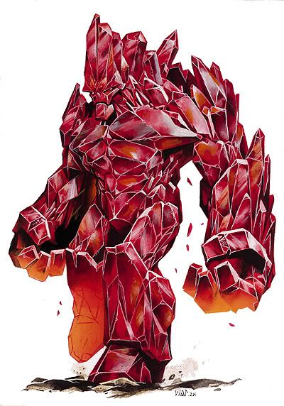

Anhedral
At an initial glance, the Anhedral may be extremely intimidating due to its sheer size and bulk, but its slow speed, uneven gait and delayed responses leave one with an underestimation for its measure of intelligence during a battle. However, this underestimation beckons a heavy price in the form of a crushingly painful death for those who raise their gun against it in carelessness. One should never fight it with prejudice, as there is valid reason for it being one of the X’Tal’s greatest forces. The Anhedral’s body is a physical manifestation of several different Gene-seeds and their various attributes mixing and conflicting amongst hardened minerals lying deep underground, resulting in a frankenstein of an X’Tal with an ever-changing form and frighteningly vast multitudes of utility in the midst of war.
Because the successful phenomena of its manifestation is not an easy task to naturally produce, this entity is actually quite rare within the ranks of the X’Tal, and the ones who have successfully manifested rise quickly within their hierarchy due to their unmatched strength and ability to channel an abnormal amount of the Warp’s energy into itself. This ability allows it to broadcast psychic energy over an extremely wide distance, making it a trifle to organize lesser swarms. Even with this, the Anhedral seems to put priority on using raw brute force over using psychic energy due to its inherent instability. Despite this, it will always use what is necessary to accomplish an objective, and once this behemoth is set in motion, it will never stop until its purpose is finished.
